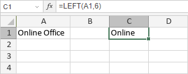

LEFT/LEFTB funkcija
LEFT/LEFTB funkcija je jedna od tekstualnih i funkcija za rad sa podacima. Koristi se za izdvajanje podniza iz zadatog stringa počevši od levog karaktera. LEFT funkcija je namenjena jezicima koji koriste jednobajtni skup karaktera (SBCS), dok je LEFTB namenjena jezicima koji koriste dvobajtni skup karaktera (DBCS) kao što su japanski, kineski, korejski itd.
Sintaksa
LEFT(text, [num_chars])
LEFT funkcija ima sledeće argumente:
| Argument | Opis |
|---|---|
| text | String iz kojeg želite da izdvojite podniz. |
| num_chars | Broj karaktera podniza. Mora biti veći ili jednak 0. Opcioni je argument. Ako nije unet, funkcija pretpostavlja vrednost 1. |
LEFTB(text, [num_bytes])
LEFTB funkcija ima sledeće argumente:
| Argument | Opis |
|---|---|
| text | String iz kojeg želite da izdvojite podniz. |
| num_bytes | Broj karaktera podniza izražen u bajtovima. Opcioni je argument. |
Napomene
Kako primeniti LEFT/LEFTB funkciju.
Primeri
Slika ispod prikazuje rezultat koji vraća LEFT funkcija.
